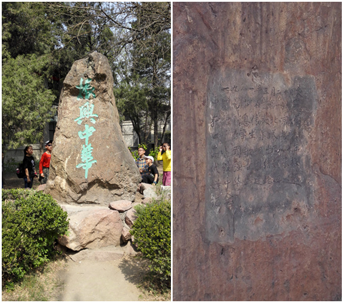
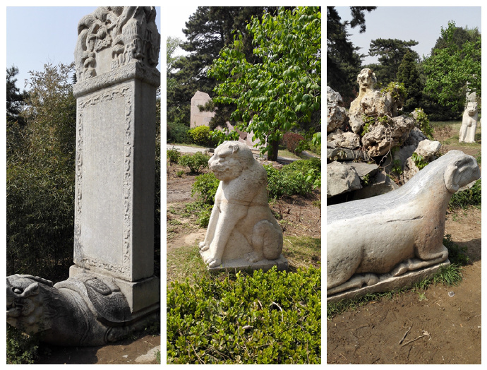
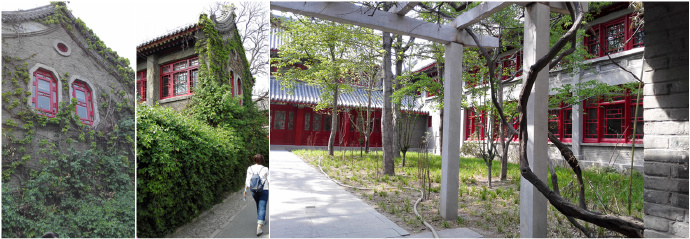
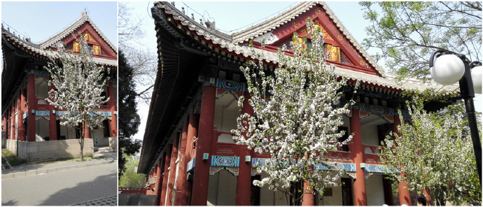
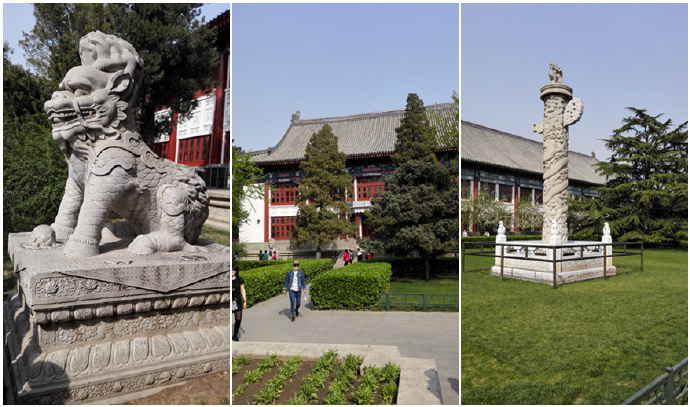
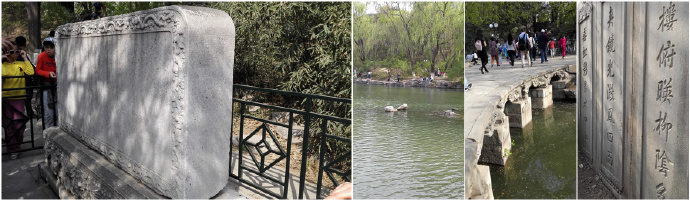
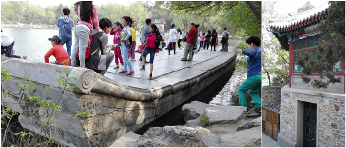
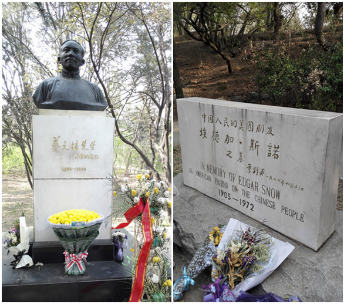

1981年3月20日夜，中国男排在香港比赛获胜消息传来，北京大学4000多学生集队游行，高唱国歌，喊出了80年代最强音，团结起来振兴中华，特建此碑以志纪念。

此处原来是清朝一个官员的墓园，背后的小山包就是宝顶

北大校园的一系列老建筑包括男女生宿舍、体育馆、主楼等都是由美国建筑设计师亨利墨菲设计的中式建筑，当时的燕京大学是一个教会学校。此处是原来的女生宿舍，十分雅致

这是原来的男生宿舍，比起女生宿舍果然粗犷多了。

正对西门的主楼，门前有雕刻精美的石狮子，还有两个华表。据说这两个华表是从圆明园搬过来的，由于搬错了，两个华表粗细不同。亨利墨菲在设计燕京大学时，暗藏了一个十字架的设计，与其教会学校的地位暗合。主楼、塔、西山构成十字架的纵轴，其他老建筑（好像是宿舍？）构成横轴，总之十分高大上的一个设计。

北大校园里有很多从圆明园搬回来的遗迹。

北大校园清朝时是和珅的花园，这里的石坊属于违制的建筑，后来都成为和珅的罪状

一个有历史和情怀的校园